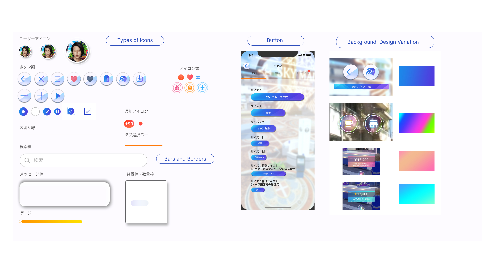

Background
During the COVID pandemic, ANA, a Japanese airline, aimed to offer customers a virtual travel experience. To fulfill this goal, We developed "ANAGranwhale," a metaverse platform allowing players to explore Japanese landmarks in virtual reality. This not only addresses the issue of ANA frequent flyers being unable to utilize their travel miles during real time traveling, but also serves as a platform for discovering places to visit in Japan post-pandemic.
My Role
Over the course of 6 months, I was tasked with improving the user experience of the metaverse platform following its initial launch. I leveraged data-driven research to inform my designs and adapted to both internal and external environments by mastering design tools like Adobe XD and Unreal Engine.
ANA GranWhale Challenges
- Collaborating with external teams to make decisions on both design and devlopement.
- Learning how to increase user engagement time.
ANA GranWhale Solutions
- Compromised on decisions and focused on teamwork, building an infrastructure that effectively bridges the gap between designers and developers.
- Researched and Designed a community feature that promoted socialization within the virtual world ( 18% increase of players staying longer than 15 minutes in the platform.)
-
Want to learn more about myJourney?
(Click the arrow to view more)How I got started
At Scopenext, I was chosen to represent the company’s lead designer for this project, leveraging our strong data management services while expanding into gaming design field. Joining the design team after the initial launch, the stakeholders requested that I, as an external designer with no prior involvement, evaluate the project's UX. So drawing on my background in research and design, my first step was to gather as much player feedbacks as possible.
It is all about the experience
When I initially looked at some of the reviews written about ANA Granwhale, the majority of them said “good concept, bad usability”, “get bored easily” . The data reflected this, showing that 73% of users logged out within 15 minutes , and 68% left empty handed. This 68% was a critical metric for ANA, as the app was designed to encourage users to spend travel miles and engage in virtual shopping. However, I strongly believe the key to any successful metaverse platform is sustained user engagement, as the time players spend directly influences their willingness to invest in the platform.
ANA GranWhale Community Feature Flow

Community Feature
I proposed adding a community feature with private and open chats centered around the concept of 'touring together.' Previously, users could send brief messages for instant communication with those nearby. Now, the focus has shifted to live chats that allow interaction with everyone across different areas.I also contributed the design of avatar action as well as emojis to color the chat experience.
Getting buy-in and Compromise
Collaborating with external teams on a large project like this was challenging, especially since I wasn't the only designer involved. Securing buy-in from the primary design team at JP Games tested my ability to manage UI design tasks. Updating the design system was particularly difficult due to my skillset. While my go to tools are Figma and Adobe XD, JP Games, being a gaming company, relied on Adobe Photoshop and Unreal Engine. This required me to compromise my skillset and learn new tools to bridge the gap between designers and game developers.
ANA GranWhale Design System
UI Concept
My task as a UI designer was updating the existing UI elements from Adobe Photoshop to Unreal Engine while creating new ones on Figma.
The app's theme, 'Sky Travel,' inspired the use of gradients in banners and buttons to create smooth color transitions. Given that ANA GranWhale operates similarly to a gaming platform, we designed 3D buttons, which are widely accepted in gaming UI. To maintain player attention to the game, we made most of the cards, modals, and popups transparent—another common feature in gaming industry. Due to non-disclosure agreement, I cannot share the UI components created in Unreal Engine, but this image was exported from Figma.After Implementing...
The implementation of the community feature introduced a new way to engage with ANA GranWhale. Since the chat room could be accessed anytime, anywhere in the game, players began clustering in the lobby (the first location upon login), which led to lagging issues and frequent app restarts. While the shopping rate initially increased by 12% in the first month, it saw a 7% decline in the second. However, an unexpected trend emerged—more players began purchasing V-Trip, a virtual travel coupon that transports avatars to specific locations. Interestingly, many players started using V-Trips together, traveling to new locations with their chat buddies, spawning into V-Trip destinations at the same time!
Reflection
I still view this outcome to be positive, because more than 45%of players stayed longer than 15 minutes. Additionally, more players are spending their travel miles on V-Trips, effectively driving monetization. However, our stakeholders were hopping to capitalize more on the virtual shopping experience given its potential for brand collaborations. With more players active in the platform, it was time to focus on new issue - how to get people excited to buy virtual items.
{kind=link}